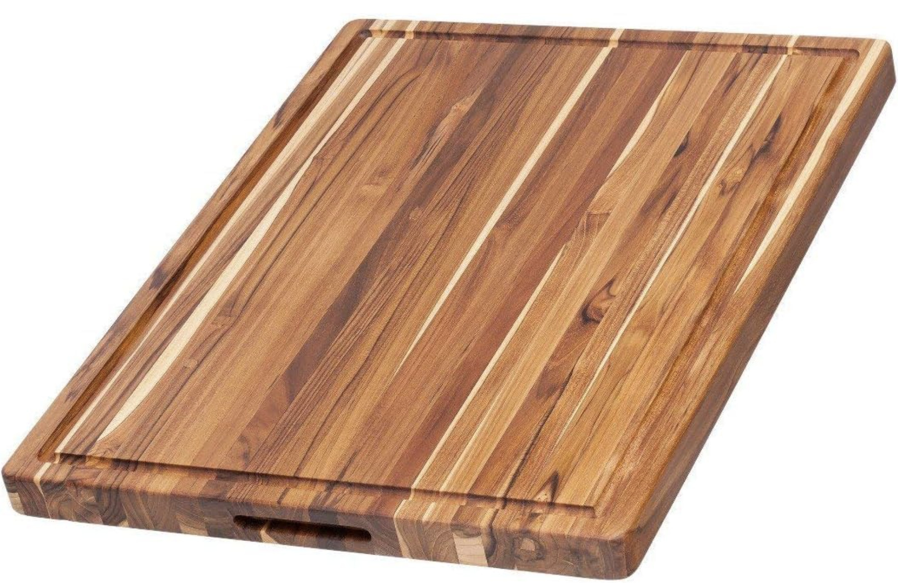

A durable teak wood board with reversible sides and natural water resistance, ideal for chopping veggies, fruit, and meat. Its simple, classic design doubles as a serving board — great for apartment kitchens where prep and presentation both matter.
Buy Best Quality Cutting Board